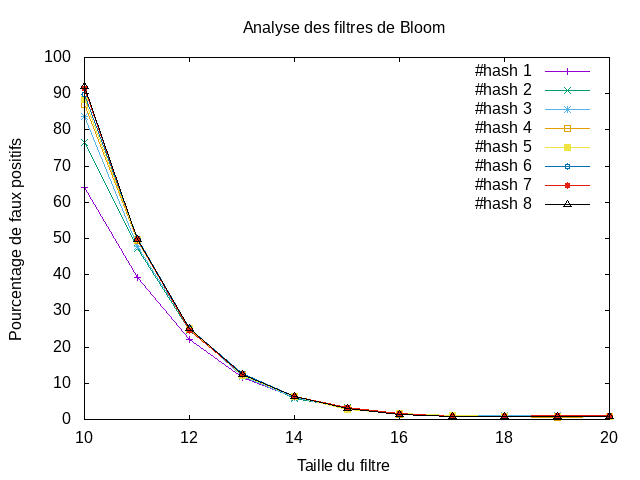

tp-bloom¶
Etat du TP¶
tp terminer
Réponses aux questions¶
Question 4.3.3¶
Question 4.3.4¶
On remarque que plus la taille du filtre est petite plus le nombre de faux positifs est élevé. On peut associer ceci au fait que plus le filtre est petit, plus il y’a de chance pour que la fonction de hachage lors de l’ajout d’une valeur tombe sur une case déjà occupée ce qui faussera la recherche de cette valeur lors de l’utilisiation de contains(). On remarque également que le nombre de fonctions de hachage influe aussi sur le nombre de faux positifs mais uniquement pour des petites tailles de filtre.